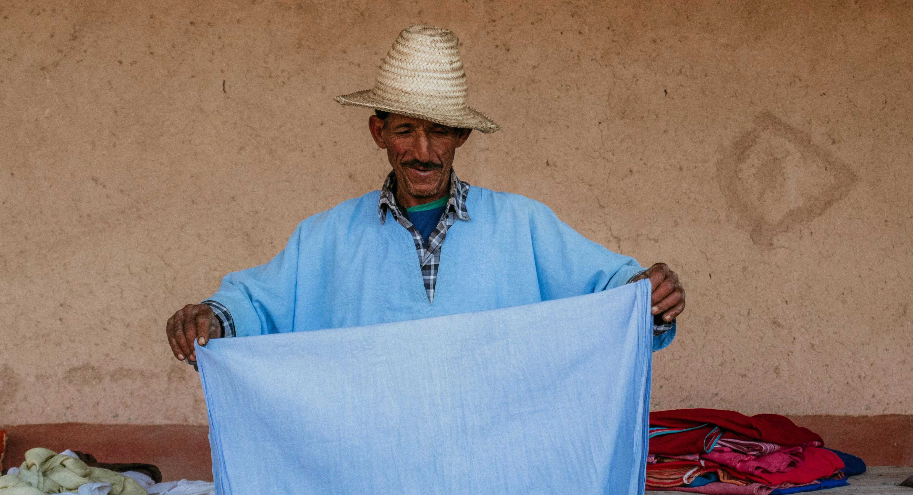
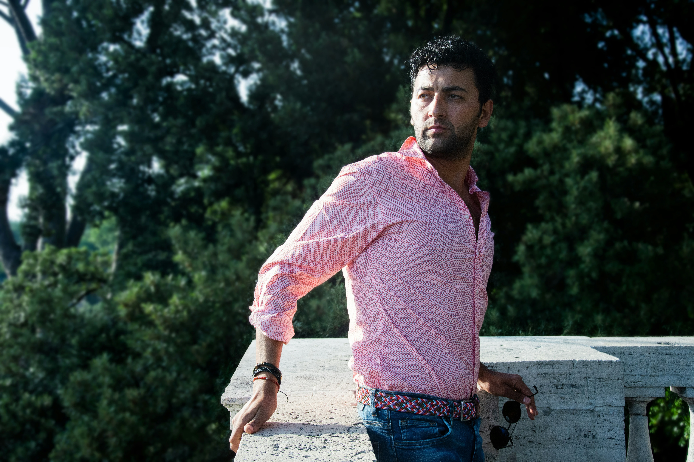
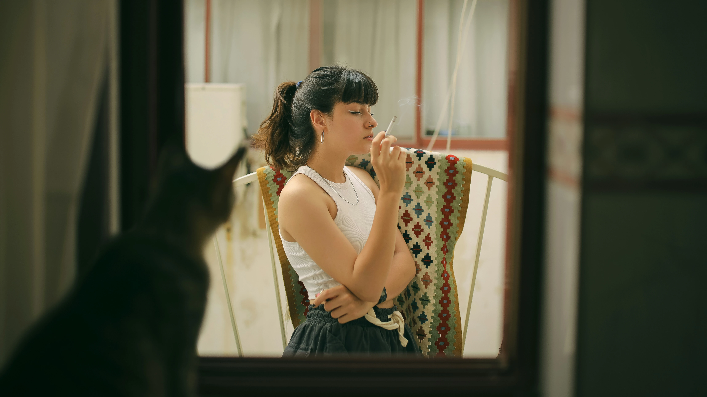

La artesanía como resistencia frente a la producción industrial
Materiales locales y sostenibilidad en la fabricación artesanal

El valor del proceso: tiempo, técnica y dedicación en la artesanía

Innovación en lo artesanal: cuando tradición y tecnología se encuentran
Oficios artesanos en peligro de desaparición
La identidad cultural a través de la artesanía